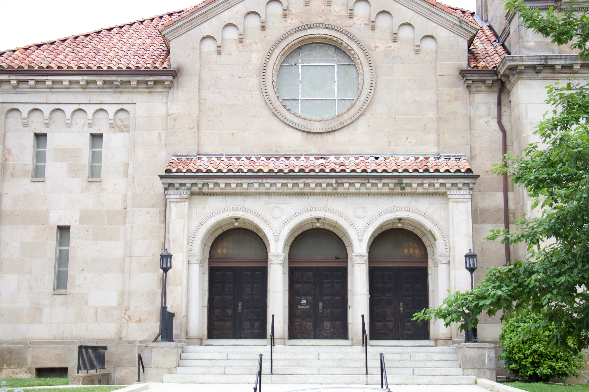

Experience the presence of God from wherever you are. Watch our services live every Sunday morning.
Missed a service? Catch up on recent messages.

▶Exploring what it means to walk in faith daily and trust God's plan for our lives.
How we can glorify Jesus in everything we do and share His love with others.
Starting the new year with God's vision and purpose for our lives and church.